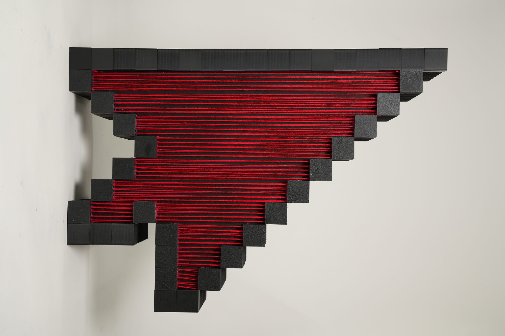
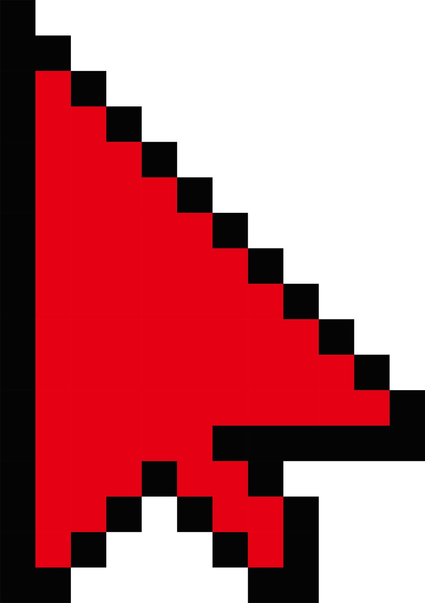
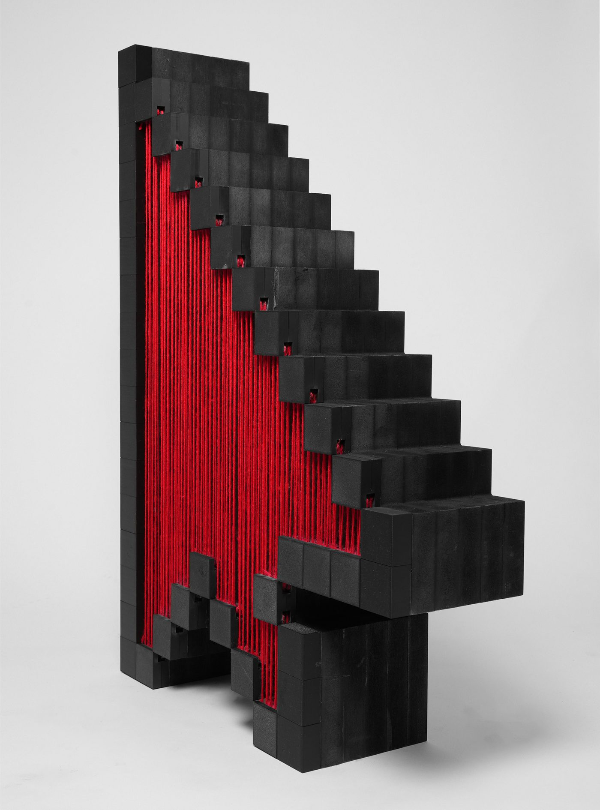
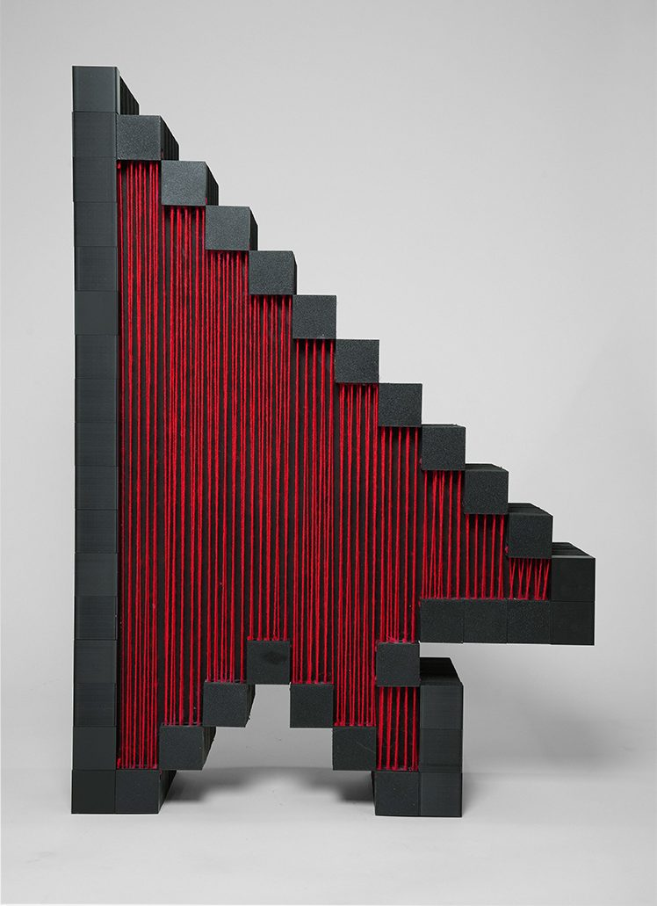
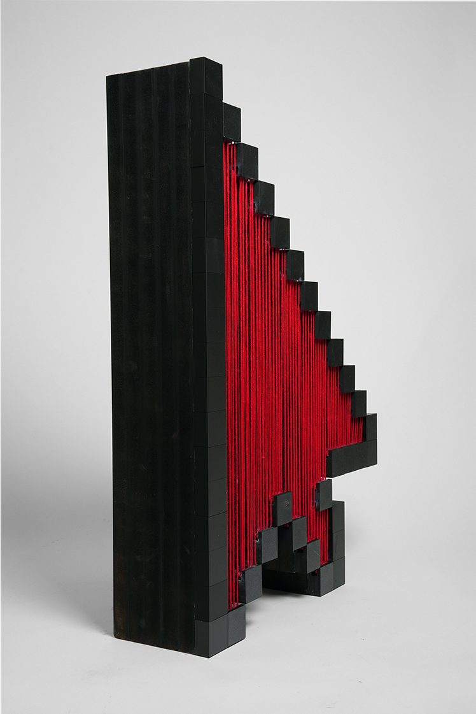
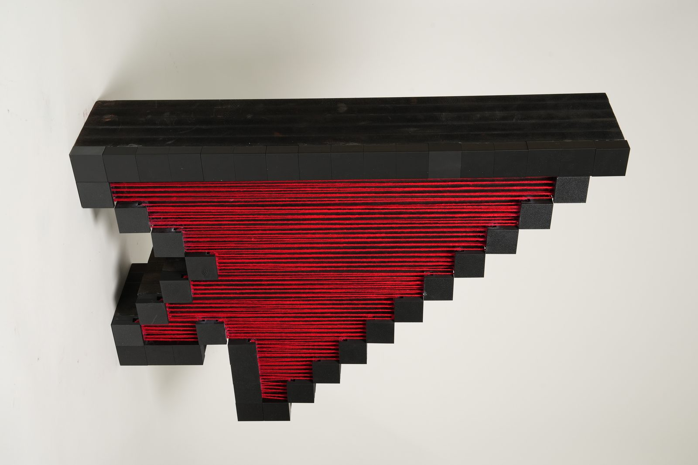
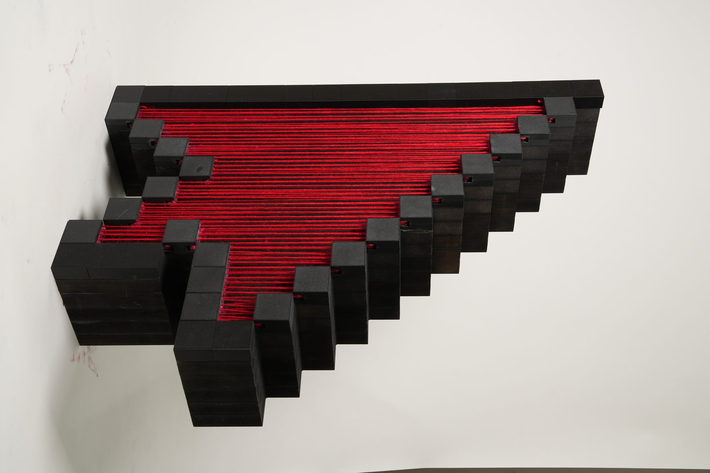

Personal project
The Red Cursor
A life-size pixel cursor, built as a sculpture and used as a prop for a video.

Overview
The Red Cursor is a life-size pixel mouse cursor, made as a physical prop for a video. It translates a digital tool into real space.
On a screen, the cursor directs attention and selection. The sculpture does the same thing physically, inviting people to pause and make more intentional choices.
In the video Red Cursor: Off the Hustle, the cursor sits in overlooked yet meaningful places instead of tourist landmarks, and invites viewers to follow it at their own pace.
How it’s made
-

Start from the screen
The plan is the arrow everyone already knows, drawn pixel by pixel: a black outline around a red fill.
-



Outline in blocks, fill in red
Each outline pixel becomes a black block, and the red fill becomes strings stretched between them.
-


On the wall
Mounted on a wall, it does what a cursor does: it points.